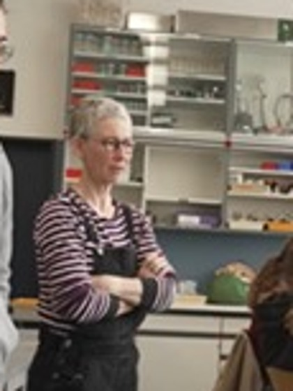
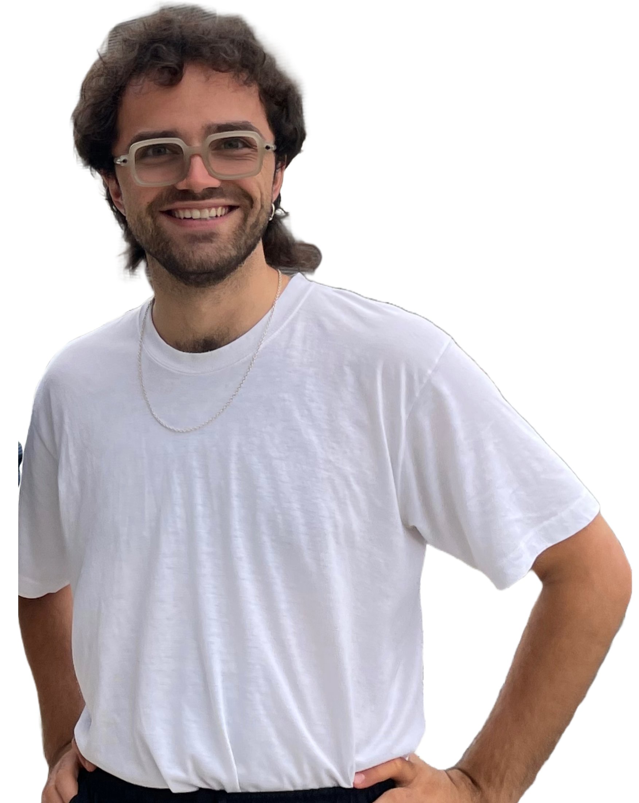

4. Edu AI-Treffen · Smartfeld · 23.06.2026
Eine Lehrerin. 20 Lehrassistenten.
Erfahrungsbericht aus neun Wochen Unterricht mit tutor.new an der Kanti Wattwil.


Vorgehen
- Highlights
- Planung
- Umsetzung
- Justierungsschlaufen
- Feedback der Lernenden
- Learnings
- Ausblick: Lehrperson und Technik
1. Highlights
Erste Beobachtungen.
In der 1SW blieben die Werte fast gleich – mehr dazu später.
War ein schlechter Bio-Schüler – jetzt sind meine Noten besser.
2GW
Bilder generieren, bis ich es verstehe.
2GW
So oft nachfragen, wie man will.
1SW
Fragen ohne Hemmschwelle – im eigenen Tempo.
1SW
2. Planung
Die Planung blieb bei Zensis Stoff.
3. Umsetzung
Jede Woche: zuweisen, bearbeiten, anschauen.
- Mitose ⇄ Meiose verwechselt 8 SuS
- Replikation: Leserichtung 5'→3' unklar 5 SuS
4. Justierungsschlaufen
Einsetzen. Beobachten. Anpassen.
Eine Version geht in die Klasse.
Was hilft, was stört?
tutor.new baut die Änderung.
5. Feedback der Lernenden
Geschätzt – und ehrlich kritisiert.
- 1:1-Erklärungen ohne Wartezeit 1SW · 2GW
- Fragen ohne Hemmschwelle, eigenes Tempo 1SW · 2GW
- Grafiken & Bilder fördern das Verständnis 2GW
- Effizientes Repetieren vor Prüfungen 2GW
- Tutor zu wenig hartnäckig – zu schnell zufrieden 1SW · 2GW
- Feedback zu wohlwollend, zu wenig direkt 2GW
- Technik: Probeprüfungen & Abstürze 1SW
- Gefahr der Monotonie / „Tunnellernen" 1SW · 2GW
Quelle: Fokusinterviews (Smartfeld) & Vorher-/Nachher-Fragebogen
5. Feedback der Lernenden
Zwei Klassen, zwei Bilder.
Mögliche Gründe: 2GW mit Flipped-Struktur & klaren Lernzielen · 1SW offenes Postenlernen, technischer Start von null.
6. Learnings
Fünf Learnings.
6. Learnings · Flexibilität
Flexibilität ist alles.
Es geht alles so schnell – ständig ist mehr möglich, mit den gleichen Inhalten. Unterricht und Technik müssen mitwachsen.
Beide passen sich laufend aneinander an.
6. Learnings · Bleiben
Tutor kam, um zu bleiben.
In der 2GW wollten alle weiterfahren. In der skeptischeren 1SW nur 50% – bis Zensi die Frage umdrehte: drei Monate ganz ohne Tutor?
„Mit dem Tutor weiterfahren?"
„Stattdessen 3 Monate ganz ohne Tutor?"
6. Learnings · Lehrperson
Lehrperson wird noch wichtiger.
Die Lehrperson sieht durch die Analysen genau, wo Stolpersteine auftauchen – und ist gefragter denn je, wenn SuS besser lernen wollen.
Wer macht was?
Voll auf Unterricht & Lernen konzentrieren.
Verdichtete Erfahrung im Hintergrund.